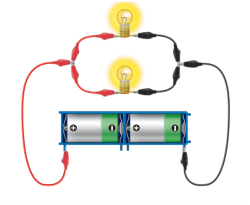
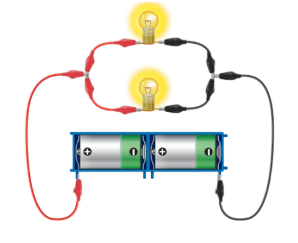
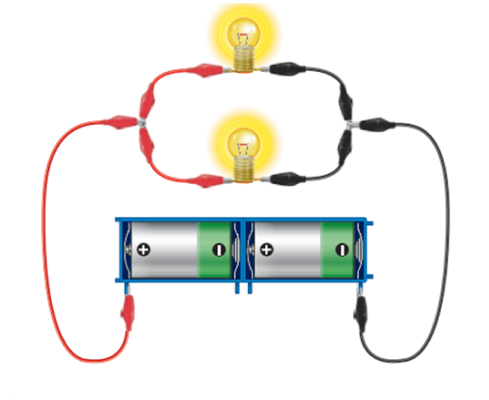

1번 다음은 전구의 연결 방법에 따른 전구의 밝기 차이에 대한 실험입니다.실험 결과를 정리한 글에 들어갈 알맞은 말은?
 

전구의 직렬연결은 전구의 밝기가 상대적으로 가 . 또 전기 에너지가 상대적으로 나 소모된다.
| 가 | 나 | |
|---|---|---|

전구의 직렬연결은 전구의 밝기가 상대적으로 가 . 또 전기 에너지가 상대적으로 나 소모된다.
| 가 | 나 | |
|---|---|---|